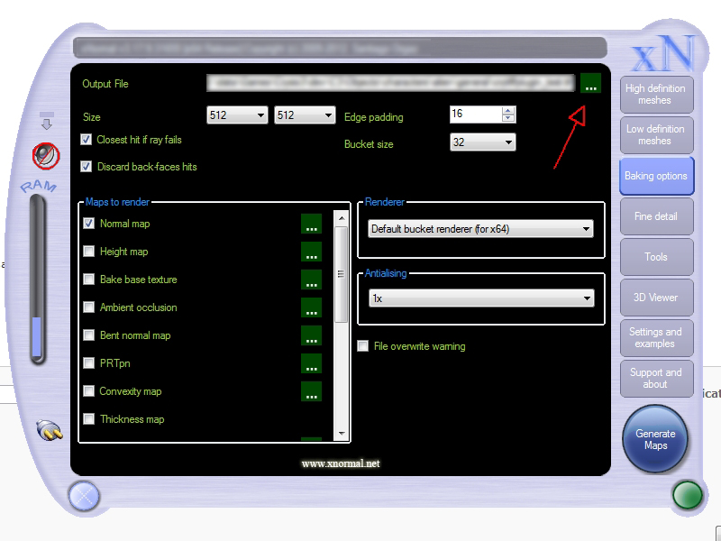
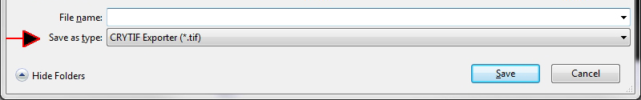

Overview
The xNormal CryTIFF plugin allows you to select CryTIFF as filetype in xNormal, and have the rendered textures automatically saved in the correct file format and texture preset for using them in Sandbox.
It is intended to be used during the normal/height/occlusion map baking process, when you often iterate on things like UVs, cages, and similar things. The plugin enables you to view the results of each bake immediately in Sandbox, without having to open the baked files with Photoshop and manually saving them with the correct suffix and texture preset.
Installation
Copy these files into your xNormal plugin directory:
- 32bit: xNormal_XXX_CryTIFF_32.dll
- 64bit: xNormal_XXX_CryTIFF_64.dll
This is the typical installation path to xNormal:
- 32bit:
C:\Program Files (x86)\Santiago Orgaz\xNormal 3.17.9\x86\plugins - 64bit:
C:\Program Files (x86)\Santiago Orgaz\xNormal 3.17.9\x64\plugins
(The 64 bit version might also be in "Program Files" -> without (x86)
Usage
After copying the plugin to the directory, you simply need to restart xNormal.
To have xNormal save files as CryTIFF files, simply select CryTIFF as file type in xNormals file save dialog:
 
Then type in your filename as you usually do (without any suffixes). Save the file in a location of the game folder (same as with all assets) so you can use it in Sandbox.
Next, choose the types of maps you want to render. After rendering is done, xNormal will have created a bunch of CryTIFF files at the location you specified, with the following suffixes and RC presets.
In this example, the filename you specified was "Alabama":
- Alabama_ddn.tif - Normal map, preset is Normalmap_highQ, 16bit floating point RGB.
- Alabama_displ.tif - Height map, preset is DisplacementMap, 8bit RGBA (both RGB and A contain height, for convenience).
- Alabama_occl.tif - Occlusion map, preset is Diffuse_highQ, 8bit RGB contains grayscale anti-occlusion (black is occluded).
- Alabama_xxxxx.TIF - Any other type of image, xxxxx is type-dependent name hardcoded in xNormal, preset is Diffuse_highQ, 8bit RGB.
Autooptimize will be set to OFF for these files, so the in-game resolution will be the same as the resolution specified in xNormal. Remember to adjust platform-dependent resolution settings by re-saving the file in Photoshop before checking such files in.
All other map types such as cavity, ray miss and so on, are saved as 8-bit RGB CryTIFF files with Diffuse_HighQ preset.